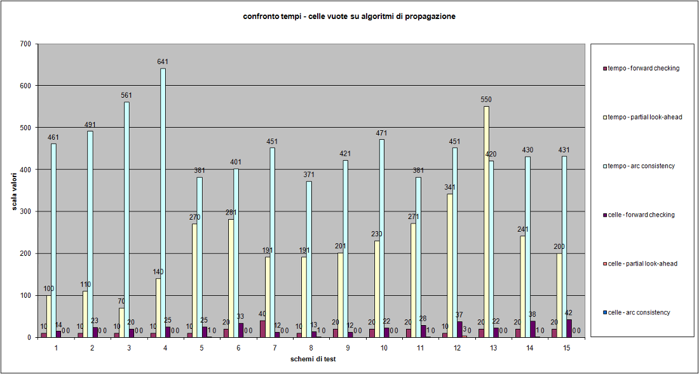
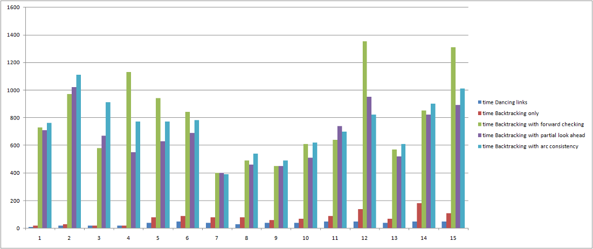
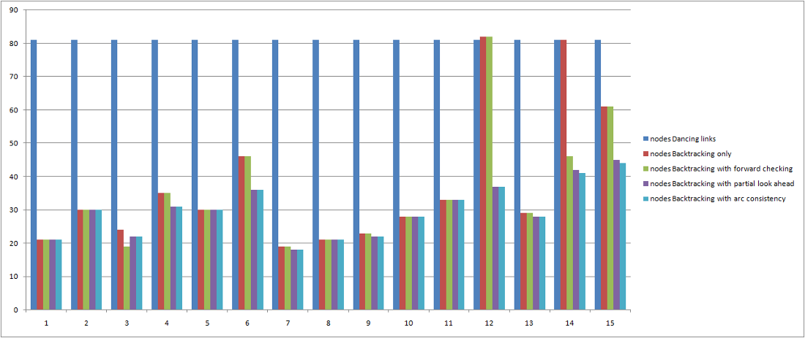

Project for "Sistemi con Vincoli" and "Intelligenza Artificiale" exams.
Authors:
Bruni Alessandro (1 CFU for Intelligenza Artificiale)
Fabbri Emanuele (1 CFU for Intelligenza Artificiale + 1 CFU for Sistemi con Vincoli)
Total CFU for the project: 3
Goal:
Make a platform to generate and resolve Sudoku games using most famous CSP techniques and a special search algorithm Algorithm X plus Dancing links structure.
Applet
This is the applet generated.
Quick guide
The applet can:
Create a new random game (clicking on "New Game")
Search for a solution using a specific algorithm (clicking on "Start solving" after having selected the preferred algorithm using the pull down menus "Search algorithm" and "Propagation algorithm"
There are 3+4+1 = 8 possible resolution methods:
Propagation only
Forward checking
Partial look Ahead
Mountain Arc Consistency
Backtracking Search
without propagation
with "Forward checking"
with "Partial look Ahead"
with "Maintain Arc Consistency"
Dancing links
For every algorithm there are 2 performance indicators of the techniques.
These are:
number of explored nodes
time elapsed to do the requested operations
In the bottom of the applet there's a box where are written some comments about the choices made by the algorithms selected.
Implemented algorithms and relative explanations
Propagation
The propagation algorithms used are the most known in the CSP discipline.
They are:
Forward Checking
Partial Look Ahead
Maintain Arc Consistency
Goal of these methods is to delete as more elements as possible from the domains of the variables bound by a constraint.
More precisely:
Forward Checking
verifies if an instantiation of a value is consistent with the preceding instantiations and, when a value of the examined variable is not consistent, removes it from the domain of the variable.
Partial Look Ahead
has the task of making Direct Arc Consistency. It means that for every analyzed variable, for every possible value in its domain the algorithm checks if there's at least another one which satisfies the constraint.
If the value of a variable in a constraint has no other second consistent element, the algorithm delete this first value from the domain.
Maintain Arc Consistency (MAC)
is similar to Partial Look Ahead. Partial Look Ahead checks all the constraints involved by a variable in only one direction (from the first variable to the second). MAC algorithm instead checks every constraint in both directions, from the first variable to the second and from the second to the first.
MAC is in fact the most powerful and most expensive propagation algorithm that can be used.
Propagation algorithms can be used without a search algorithm. With simple problems in fact they can be reduce the domains to just one element in many (if not all) of the variable domains. Every time a domain has only one element, it means that the element can be safely instantiated.
Sudoku problems are not always resolvable only with propagation. It depends on the ease of the initial scheme. Generally Forward Checking can find from 0 to 10 good values to instantiate, Partial Look Ahead from 5 to almost all and Mac almost every time can find a complete solution.
There are some cases where the sudoku is too difficult so propagation is not sufficient to find a complete solution. In this case (when all the domains of the variables to instantiate has at least 2 elements and the algorithm cannot decide what to do).
Search algorithms
Algorithm X using Dancing Links
Algorithm X is a recursive procedure which addresses the problem of the exact cover of a matrix, that is, given a matrix of m rows and n columns with domain {0,1}, find a subset of rows for which the following property holds: for each column there is exactly one element set to 1, all the others are 0s.
This general algorithm can be applied to any one-cover problem by encoding the constraints to the columns of the matrix and encoding the ways to satisfy them within the rows. A famous example of the application of this algorithm is the solution of the n-queen problem, for which this approach reveals to be particularly efficient.
Furthermore, if the matrix is sparse as is the case of the encoded sudoku games, then there is a very efficient way to implement the algorithm, which is called "Dancing Links" or DLX and has been proposed by Donald Knuth. With this particular implementation the algorithm becomes really interesting for the solution of coverage problems. Its performance in the solution of sudoku boards has made it the standard benchmark for the algorithm for the solution of sudokus. It is also used in this project for the generation of random sudoku boards, by building a random, completely solved sudoku and then casually removing items from the board while the solution is still unique.
Backtracking
It's a basic brute force algorithm with the possibility of retrying wrong moves until the scheme is closed. The basic idea is to evaluate (possibly with some variable sorting) all the possible values for every non instantiated variable and then try an instantiation (if it is consistent).
The basic algorithm doesn't performs evaluations on the domains, so the goal is to try all the possible values for every variable until either the scheme is closed or an inconsistent situation occurs (i.e. every possible value is not consistent and so the scheme has no solution) and then goes back to preceding moves to choose alternative paths until it finds a solution.
This is a very inefficient algorithm (because it must try almost every possible value of every variable) but certainly can always find a solution without the risk of infinite loops.
Backtracking with propagation
This is the most used algorithm because it combines a complete search algorithm (that can check every variable using a specific order) with the constraint propagation that allows to avoid unnecessary cycles and instantiations reducing the number nodes evaluated and, if the propagation algorithms are efficient, reduce the time to get a solution.
Technologies and development
This applet has been built using a mix of Java and Scala, the latter being a functional and object oriented programming language which produces bytecode for the JVM.
Java has been chosen for the development of the front-end, while Scala was used for the back-end functions. The functional flavor of Scala is well suited for the development of recursive algorithms such as the backtracking search for the solution of CSPs and the algorithm x which solves the problem of the exact cover of a matrix.
All the code has been versioned using git during the development and is publicly available at http://github.com/hoheinzollern/Sudoku-Solver.
To support the development of this applet we used the Eclipse IDE. Alas, the lack of a good support for the language within the IDE made the development of this project quite uncomfortable, due to continuous crashes and awkward errors which invalidated may of our efforts.
Performance evaluations
Tests made on the platform have demonstrate that:
Dancing Links is the best solver because it has a fixed number of analyzed nodes (exactly 81, the total number of fields without using backtracking solutions) and is very quick
Using propagation with a backtracking algorithm can reduce the number of nodes to analyze (because some domains become smaller) but it may also need much more time to do all the necessary consistency tests.
Dancing Links is them the most balanced between time and space. If time is more important, then it should be used Dancing Links, otherwise if space is more important than time backtracking plus propagation are the best solutions.
Propagation algorithms could also be used to define a level of complexity of a random generated scheme. This could be a good extension for the project.

In this graphic there are all the sequences (from 1 to 15) tested. These sequences are generated from the random algorithm, so the results vary from one case to another. Is evident that Arc consistency is the best propagation algorithm. In fact it has the minor request of time and it removes almost all the blank cells replacing them with correct values.

In this graphic there's a comparison betweeen search algorithms and their needing of time. It can be seen that dancing links is the fastest algorithm in terms of time, followed by backtracking search.

As it can be seen in this graph, Dancing links is more expensive in terms of number of node analized, that can be lowered by using any other type of method.
Conclusions and references
Project is released as is without any limitation about using and distributing it.